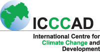
ICCCAD
Digital home for climate research, learning, and action in Bangladesh.
A focused practice for turning complex ideas into clear, useful web platforms, digital platforms, and online experiences.
Back to my IT profile
Digital home for climate research, learning, and action in Bangladesh.
A digital platform for climate research exchange, dialogue, and collaboration.
A clear digital presence for leadership in urban climate change work.
A one-stop source for climate change information in Bangladesh.
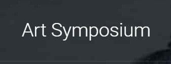
A creative digital space connecting young people, art, and climate action.
A knowledge portal bringing climate evidence, voices, and resources together.
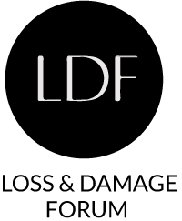
A focused platform for a global climate conversation.
A freelance web project for an export-oriented garments industry.
Consultancy support and mail solution services for a growing business group.
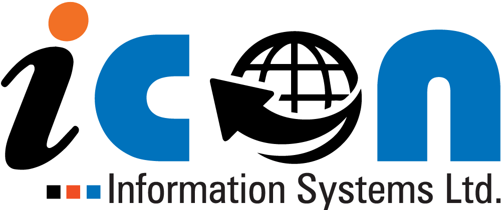
Website development and technology delivery for an information systems company.
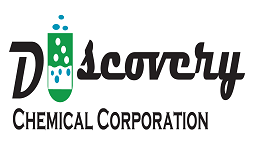
Website and corporate design support for a specialist chemical company.
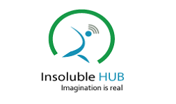
A focused website design project for a digital venture.
Website support for an international education organisation.
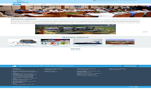
A corporate website for a reputed business house in Bangladesh.
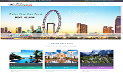
A clearer digital front door for a travel agency.
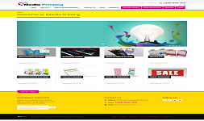
An e-commerce website made for fast decisions and repeat orders.
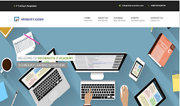
A website project for an IT education and training organisation.
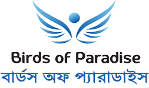
A website design project for a special children’s school.
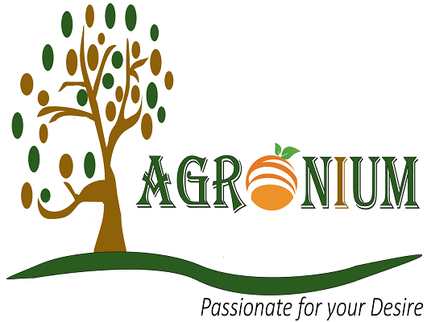
Corporate design and e-commerce website development.
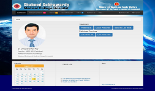
An interactive healthcare web app available to discuss on request.
Showing 20 selected projects
Fast, responsive websites and durable content systems that are easy to manage.
Clear interfaces, thoughtful structure, and journeys that respect people’s time.
From custom web apps to digital platforms and knowledge hubs, I turn complex requirements into useful tools.